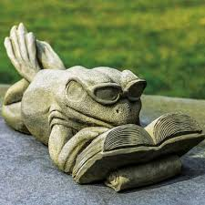

Когда лягушонок пришел в Фрог-школу, он был очень удивлен. Он ожидал увидеть много
других лягушек,
но вместо этого он увидел множество людей с компьютерами. Он смущенно спросил, как он может учиться
Фрограммированию, будучи лягушкой.
И услышал ответ, что это не имеет значения, каким видом животного ты являешься, когда речь идет о
Фрограммировании.
Лягушонок был рад услышать это и быстро начал обучение.В начале ему было трудно понять
все термины и концепции, но с помощью учителей и других студентов
он
начал понимать все лучше и лучше.
Со временем лягушонок начал писать свои собственные Фроги.
Он
часто
приносил свои работы в школу,
где они обсуждались и дорабатывались.Однажды лягушонок создал Фрогу для автоматического полива
цветов в лесу, которая вызвала
восхищение у всех лесных жителей.
Они были очень благодарны и счастливы, что у них есть такой умный и технически подкованный
друг.